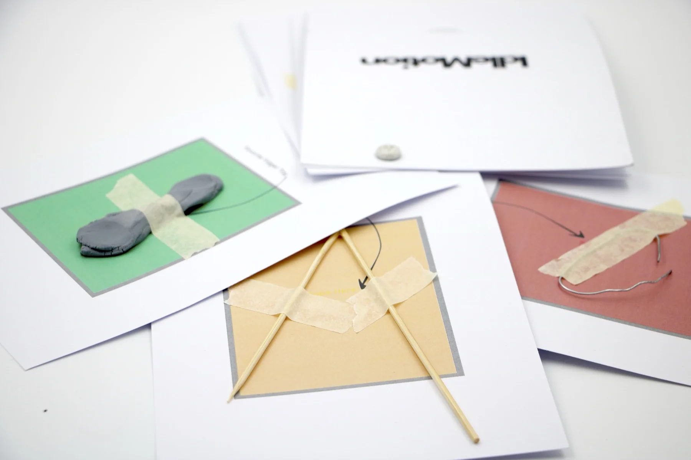
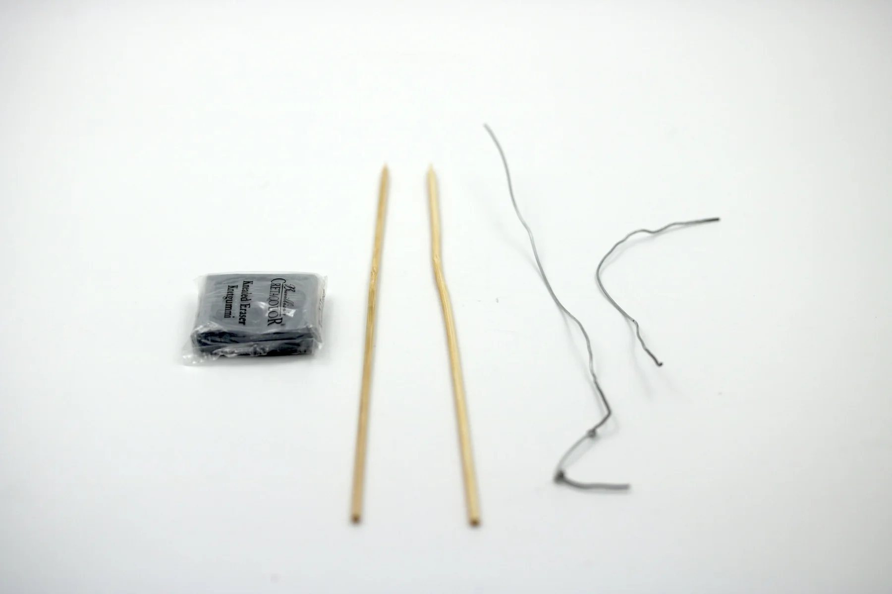
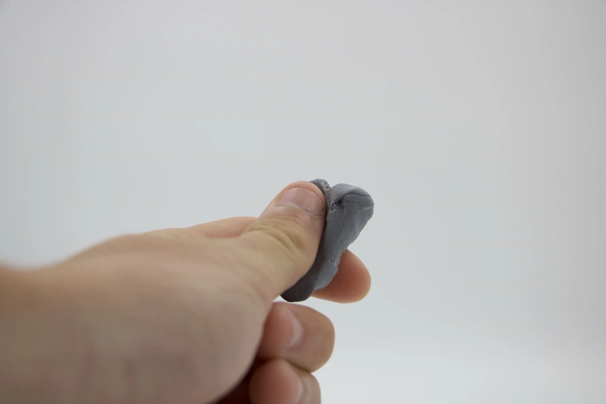
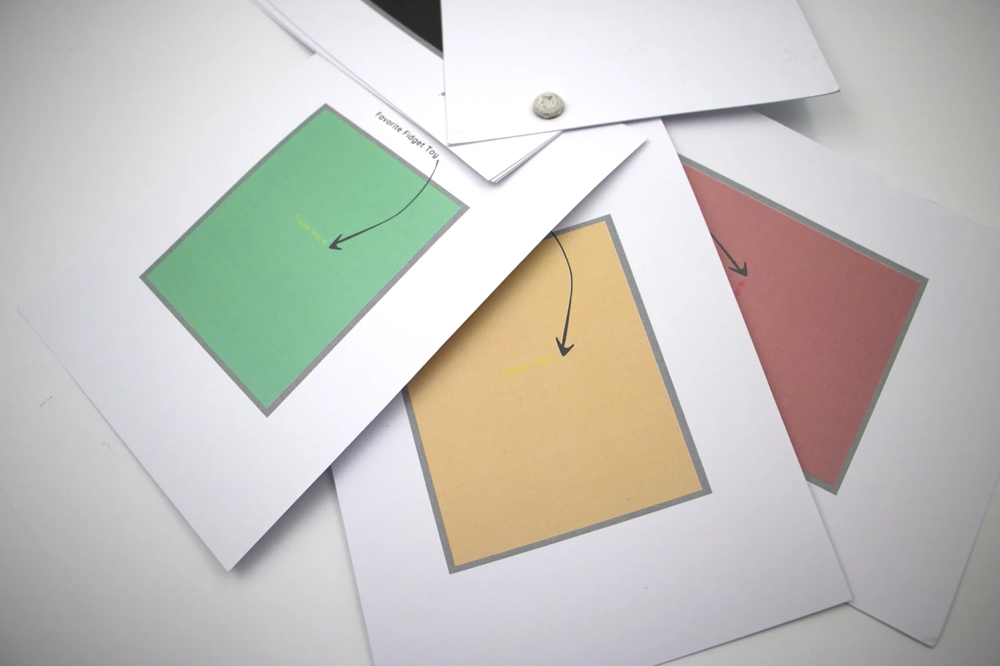
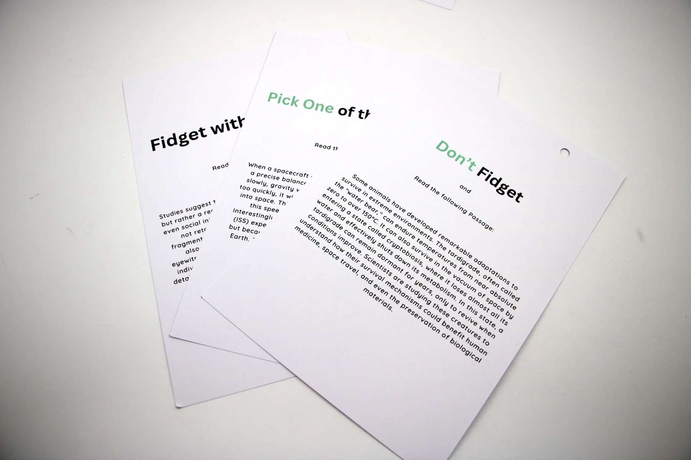

Idle Motion
A study of fidgeting, everyday habit and movement, explored through a cultural probe and a kinetic sculpture.


01 / The question
What do our hands do
when we’re not thinking?
Idle Motion investigates fidgeting through two related studies: a cultural probe into everyday tactile habits, and a kinetic sculpture that gives repetitive movement a physical form.
The work moves between observing ordinary behaviour and making objects that help us notice it.




02 / Cultural probe
Small objects.
Individual responses.
Participants were given fidget objects to use, rank and respond to over several days. Their choices and observations became material for a zine about habit, attention and tactile preference.
The printed pages bring the objects, rankings and written responses together so the study can be read as a record of interaction.




The cultural probe
Project documentation of the probe and its outcomes. Download video ↗
03 / Kinetic study
Repetition made visible.
The second part translates fidgeting into a rotating arrangement of fingers. A continuous circular motion turns an often-unnoticed habit into something that can be watched and studied.
The finger mechanism in motion
The kinetic finger study in operation. Download video ↗
Next project